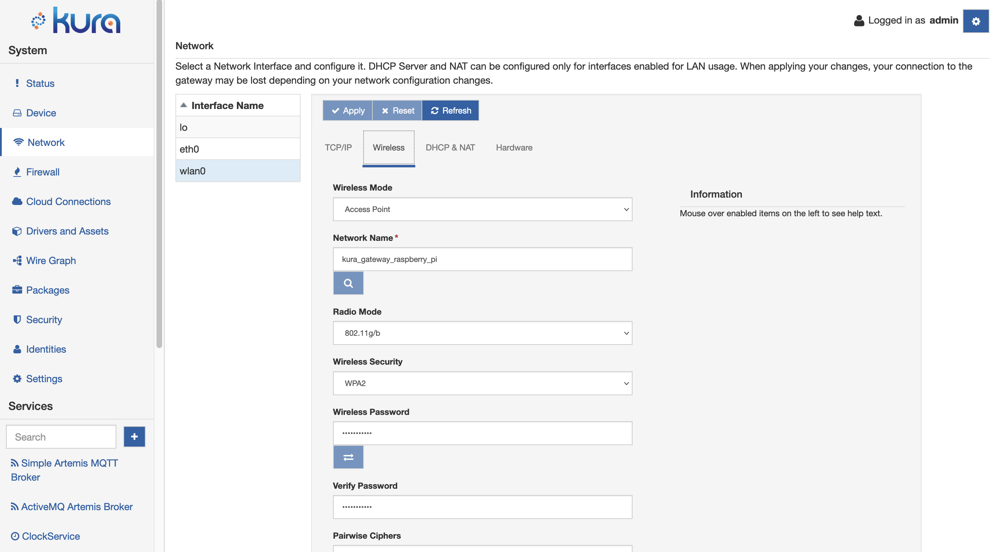

Wi-Fi Configuration
From a configuration standpoint, the Wi-Fi interface (e.g., wlan0) may be viewed as an extension of Ethernet. In addition to the TCP/IP and DHCP & NAT configuration tabs, it has the Wireless tab that allows for the configuration of wireless settings. These configuration options are described below.
Warning
Before using wifi make sure that you have correctly set the Regulatory Domain on the gateway. You can check the current configuration using the iw reg get command. To set the Regulatory Domain please refer to the specific section in the Gateway Configurations.
Wireless Configuration
The Wireless tab contains the following configuration parameters:
-
Wireless Mode: defines the mode of operation.
- Access Point: creates a wireless access point.
- Station Mode: connects to a wireless access point.
-
Network Name: specifies the Service Set Identifier (SSID).
- In Access Point mode, this is the SSID that identifies this wireless network.
- In Station mode, this is the SSID of a wireless network to connect to.
-
Radio Mode: defines 802.11 mode.
- 802.11 ac/n/a (either in 2.4Ghz or 5Ghz depending on the choosen channel)
- 802.11n/g/b (2.4Ghz only)
- 802.11g/b (2.4Ghz only)
- 802.11b (2.4Ghz only)
- 802.11a (either in 2.4Ghz or 5Ghz depending on the choosen channel)
-
Wireless Security: sets the security protocol for the wireless network.
- None: No Wi-Fi security
- WEP: Wired Equivalent Privacy
- WPA: Wi-Fi Protected Access
- WPA2: Wi-Fi Protected Access II
- WPA2/WPA3-Enterprise: Wi-Fi Protected Access II & III with 802.1x Support (Only available in station mode with generic profiles)
-
Wireless Password: sets the password for the wireless network.
- WEP: 64-bit or 128-bit encryption key
- WPA/WPA2: pre-shared key
-
Verify Password: sets the password verification field.
- In Access Point mode, allows the wireless password to be retyped for verification.
- In Station mode, this field is disabled.
-
Pairwise Ciphers: lists accepted pairwise (unicast) ciphers for WPA/WPA2.
- In Access Point mode, this option is disabled.
- In Station mode,
- CCMP (AES-based encryption mode with strong security)
- TKIP (Temporal Key Integrity Protocol)
- CCMP and TKIP
-
Group Ciphers: lists accepted group (broadcast/multicast) ciphers for WPA/WPA2.
- In Access Point mode, this option is disabled.
- In Station mode,
- CCMP (AES-based encryption mode with strong security)
- TKIP (Temporal Key Integrity Protocol)
- CCMP and TKIP
-
Bgscan Module: requests background scans for the purpose of roaming within an ESS (i.e., within a single network block with all the APs using the same SSID).
- None: background scan is disabled
- Simple: periodic background scans based on signal strength
- Learn: learn channels used by the network and try to avoid bgscans on other channels
-
Bgscan Signal Strength Threshold: defines a threshold (in dBm) that determines which one of the following two parameters (i.e., Short Interval or Long Interval) will be effective.
-
Bgscan Short Interval: defines the interval between background scans (in seconds) if the actual signal level of the currently connected access point is worse than signal_strength.
-
Bgscan Long Interval: defines the interval between background scans (in seconds) if the actual signal level of the currently connected access point is better than signal_strength.
-
Ping Access Point & renew DHCP lease if not reachable: enables pinging the access point after connection is established.
- In Access Point mode, this option is disabled.
- In Station mode, if set to true, the unit will ping the access point and attempt to renew the DHCP lease if the access point is not reachable.
-
Ignore Broadcast SSID: operates as follows if set to true:
- In Access Point mode, sends an empty SSID in beacons and ignores probe request frames that do not specify full SSID.
- In Station mode, does not scan for the SSID before attempting to associate.
-
Channels table: allows the selection of desired channel frequencies. The availability of the desired frequency is subject to the Regdom set on the device. For a list of limitations in different countries you can consult the following page: List of WLAN channels. Channels marked as No Irradiation and Radar Detection can be used only if DFS (Dynamic Frequency Selection) is supported by the Wi-Fi chip.
- In Access Point mode, only one channel may be selected.
- In Station mode, the list of available channels depends on the selected Radio Mode. The selected radio mode also affects the ability to select a network in the scan window (if the channel associated with the network is not enabled in the regulatory domain an error message will be shown).

Wi-Fi Station Mode Configuration
In addition to the options described above, the Wireless configuration display provides two buttons that help to configure Wi-Fi in the Station mode. These buttons are described below.
-
Access Point Scan: clicking this button triggers access point scan operations. Upon a successful scan, a table containing access points within range is presented. This table contains the following information:
- SSID
- MAC Address
- Signal Strength (in dBm)
- Channel
- Frequency
- Security
If you select one of these access points, respective wireless controls (i.e., Network Name, Wireless Security, and Channel) are filled with information obtained during the scan operation.
-
Password Verification: clicking this button triggers password verification before a full connection is established.
Generic Profiles Access Point Scan Issue
Due to a limitation in our current implementation of Access Point scanning in the generic profiles, a scan triggered while the device Wireless Mode is set as Access Point will result in it reporting itself as the only reachable Access Point.
To retrieve the actual list of nearby Access Points, set your device in Station Mode with a temporary configuration and trigger the scan again.
Wi-Fi Linux Configuration
This section describes the changes applied by Kura at the Linux networking configuration. Please read the following note before proceeding with manual changes of the Linux networking configuration.
Warning
It is NOT recommended performing manual editing of the Linux networking configuration files when the gateway configuration is being managed through Kura. While Linux may correctly accept manual changes, Kura may not be able to interpret the new configuration resulting in an inconsistent state.
When the Wi-Fi configuration for the Access Point mode is submitted, Kura generates the /etc/hostapd.conf file and launches the hostapd program as shown below.
# /etc/hostapd/hostapd.conf
interface=wlan0
driver=nl80211
# SSID to use. This will be the "name" of the accesspoint
ssid=kura_gateway_00:E0:C7:09:35:D8
# basic operational settings
hw_mode=g
wme_enabled=0
ieee80211n=0
channel=1
# Logging and debugging settings: more of this in original config file
logger_syslog=-1
logger_syslog_level=2
logger_stdout=-1
logger_stdout_level=2
dump_file=/tmp/hostapd.dump
# WPA settings. We'll use stronger WPA2
# bit0 = WPA
# bit1 = IEEE 802.11i/RSN (WPA2) (dot11RSNAEnabled)
wpa=2
# Preshared key of between 8-63 ASCII characters.
# If you define the key in here, make sure that the file is not readable
# by anyone but root. Alternatively you can use a separate file for the
# key; see original hostapd.conf for more information.
wpa_passphrase=testKEYS
# Key management algorithm. In this case, a simple pre-shared key (PSK)
wpa_key_mgmt=WPA-PSK
# The cipher suite to use. We want to use stronger CCMP cipher.
wpa_pairwise=CCMP
# Change the broadcasted/multicasted keys after this many seconds.
wpa_group_rekey=600
# Change the master key after this many seconds. Master key is used as a basis
# (source) for the encryption keys.
wpa_gmk_rekey=86400
# Send empty SSID in beacons and ignore probe request frames that do not
# specify full SSID, i.e., require stations to know SSID.
# default: disabled (0)
# 1 = send empty (length=0) SSID in beacon and ignore probe request for
# broadcast SSID
# 2 = clear SSID (ASCII 0), but keep the original length (this may be required
# with some clients that do not support empty SSID) and ignore probe
# requests for broadcast SSID
ignore_broadcast_ssid=0
When the Wi-Fi configuration for the Station mode is submitted, Kura generates the /etc/wpa_supplicant.conf file and launches the wpa_supplicant program as shown below.
# /etc/wpa_supplicant.conf
# allow frontend (e.g., wpa_cli) to be used by all users in 'wheel' group
ctrl_interface=/var/run/wpa_supplicant
ctrl_interface_group=wheel
# home network; allow all valid ciphers
network={
mode=0
ssid="Eurotech-INC"
scan_ssid=1
key_mgmt=WPA-PSK
psk="WG4t3101"
proto=RSN
pairwise=CCMP TKIP
group=CCMP TKIP
scan_freq=2412
bgscan=""
}